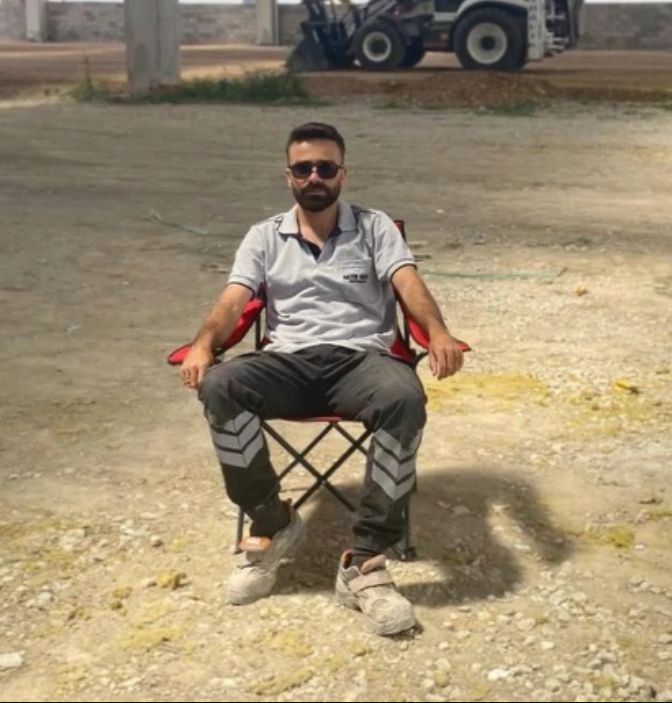
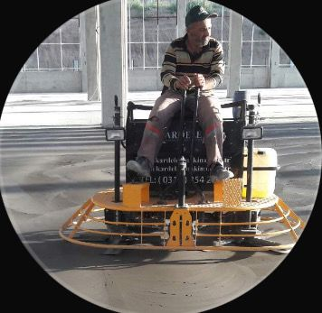

Yönetici

Kurucu
Aktif Beton, Ali Koçak tarafından 2014 yılında kurularak Ankara’da sektöre hızlı bir giriş yapmış ve kısa sürede başarısına başarı eklemiş bir firmadır.
Günümüzde kurucumuz Ali Koçak ve oğlu Mert Koçak yönetimiyle faaliyetlerini sürdüren firmamız, zamanla bünyesine Otomotiv sektörünü de eklemiştir. Ankara ve çevresinde başlayan bu serüven, bugün Türkiye genelinde tanınan ve holdingleşme yolunda emin adımlarla ilerleyen başarılı bir firma haline gelmiştir.
Ankara'dan doğan bu başarı hikayesini Türkiye geneline yayarak, holdingleşme sürecimizi tamamlamak ve her iki sektörde de parmakla gösterilen bir marka olmak.
Kuruluşumuzdan bu yana ödün vermediğimiz dürüstlük ve kalite anlayışımızı, modern sektör ihtiyaçlarıyla birleştirerek müşterilerimize en güvenilir çözümleri sunmak.